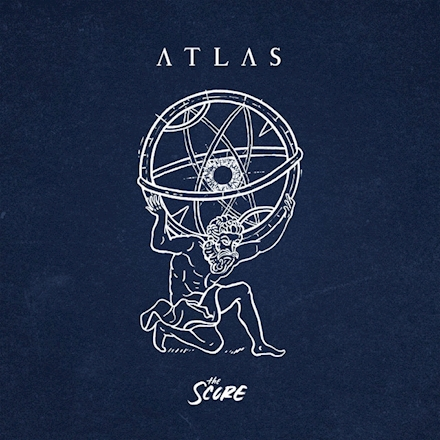

Music Album Showcase: ATLAS by The Score

Track List
- Never Going Back
- Legend
- Only One
- Tightrope
- Believe
- Unstoppable
- Who I Am
- Revolution
- Shakedown
- Higher
- Miracle
- Strange
Some Album Facts!
- The Score released ATLAS on October 13, 2017.
- ATLAS has a deluxe version, with a lot more songs!
- The most popular song on ATLAS by The Score is
“Unstoppable” with a total of 172K page views.